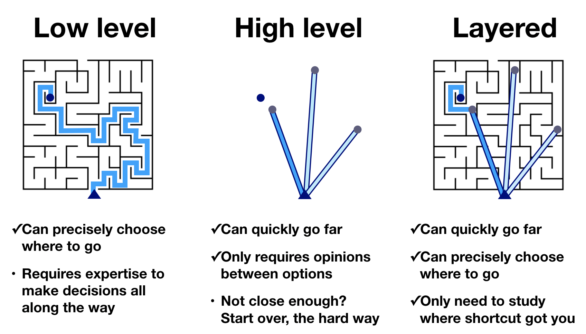

Background: Why HoloViz?#
Many of the activities of an engineer, scientist, or analyst require visualization, but it can be difficult to assemble a set of tools that cover all of the tasks involved. Initial exploration needs to be in a flexible, open-ended environment where it is simple to try out and test hypotheses. Once key aspects of the data have been identified, the analyst might prepare a specific image or figure to share with colleagues or a wider audience. Or, they might need to set up an interactive way to share a set of data that would be unwieldy as a fixed figure, using interactive controls to let others explore the effects of certain variables. Eventually, for particularly important data or use cases, the analyst might get involved in a long-term project to develop a full-featured web application or dashboard to deploy, allowing decision makers to interact directly with live data streams to make operational decisions.
With Python, initial exploration is typically in a Jupyter notebook, using tools like Matplotlib and Bokeh to develop static or interactive plots. These tools support a simple syntax for making certain kinds of plots, but showing more complex relationships in data can quickly turn into a major software development exercise, making it difficult to achieve understanding during exploration. Various toolkits like Bokeh, Dash, and ipywidgets allow building apps to control and explore these visualizations interactively rather than recoding each time, but again outside of a small range of simple functions building the app itself becomes a major software development exercise. Plotting libraries also have limitations on how much data they can handle, especially if they require that all of the data be present in the web browser’s limited memory space. It is thus difficult to find tools that support anything close to the entire range of cases where data needs to be visualized.
The HoloViz ecosystem#
holo : Greek root, meaning whole, entire.
To address all the above issues, we have developed a set of open-source Python packages to streamline the entire process of working with small and large datasets (from a few datapoints to billions or more) in a web browser, whether doing exploratory analysis, making simple widget-based tools, or building multipage standalone dashboards. Building on existing plotting libraries like Bokeh, Matplotlib, and Plotly, the HoloViz ecosystem includes a set of special-purpose tools designed to fill in the gaps and solve the whole problem of visualization:
Panel: Assembling objects from many different libraries into a layout or app, whether in a Jupyter notebook or in a standalone servable dashboard
hvPlot: Quickly return interactive HoloViews, GeoViews, or Panel objects from Pandas, Xarray, or other data structures
HoloViews: Declarative objects for instantly visualizable data, building Bokeh plots from convenient high-level specifications
GeoViews: Visualizable geographic data that that can be mixed and matched with HoloViews objects
Datashader: Rasterizing huge datasets quickly as fixed-size images
Lumen: Framework for visual analytics that allows users to build data-driven dashboards from a simple YAML specification
Colorcet: A wide range of perceptually uniform continuous colormaps and perceptually based categorical color sets for use with the other libraries
Assuming that you have some data of some particular Data type, the chart below will help you choose a suitable Python Data library for reading in the data and working with it, and then a suitable HoloViz API for specifying plots of that type of data, including optional HoloViz libraries. Given these choices, you can then choose an appropriate Plotting library for actually rendering visualizations, along with a Dashboarding library if you need one:

Each of these steps is just a suggestion, presented here to show you how we designed the HoloViz tools, and how everything is meant to fit together. You are welcome to combine these tools or anything else from Python any way you like. For instance, you do not have to use GeoPandas or GeoViews if you are working with geospatial columnar data; you can use regular Pandas and handle projections and other geospatial operations yourself. You do not have to use Datashader if you have large datasets; you can simply subsample or select your data into a small enough subset that it becomes feasible with other tools. You do not have to use Streamz for working with streaming data; it just makes it simpler. So please use whatever library you wish, now that you know what our suggestions are and how we mean it to fit together!
Shortcuts, not dead ends#
As you can see, the tools are designed to solve the problems of very different users working on very different tasks, which reflects the diversity of users and needs for data visualization. Casual users will often want a quick way to get something that works well enough, while a dedicated technical user with specialized needs will want detailed control over each aspect, which usually means a different and more low-level tool. But because many people fall in between these extremes, and because individual users often travel on a trajectory from casual user to power user as their needs become more precise, the tools are also designed to transition easily between each of these different approaches.
That is, these tools are designed to offer simplified, high-level interfaces that are easy ways for users to get started, but those easy ways should truly be starting points, not dead ends. To illustrate this point, consider three different types of tools – low level, high level, and layered:
A low-level tool is highly configurable, with an expressive but relatively verbose command language that makes it possible to precisely control how it works. For HoloViz, Bokeh is a low-level tool, allowing any plot or app to be built up from basic primitives. An even lower-level approach would be to write javascript directly. A high-level tool like hvPlot or like Panel’s interact function uses much less code and a much simpler interface to make a powerful plot or dashboard, but what do you do if you then need to make some small changes in the result?
Typical high-level tools will just be dead ends at this point, forcing you to start over if what they provide isn’t what you needed. HoloViz high-level tools are instead systematically designed as layers on top of lower-level tools, where you can use the top level for anything that it provides, while always being able to drop down a level (or several if necessary!) to get the behavior you need.
Panel’s interact function provides a clear example of this approach. With one line of Panel code you can get a fully functional widget-based app. But if it’s not precisely what you want, you can then inspect what’s returned, unpack it, rearrange and add or delete components, then use the result instead. Similarly, hvPlot provides a one-line way to return complex HoloViews objects, which can then be inspected, pulled apart, reconfigured, and recomposed if/as needed. And then these HoloViews objects, in turn, can be used to make a Bokeh or Matplotlib figure that again can be examined, modified, and used in other contexts.
Building on the Python scientific ecosystem#
Beyond the specific HoloViz tools, all these approaches work with and often rely upon a wide range of other open-source libraries for their implementation, including:
Pandas: Convenient computation on columnar datasets (used by HoloViews and datashader)
Xarray: Convenient computations on multidimensional array datasets (used by HoloViews and Datashader)
Dask: Efficient out-of-core/distributed computation on massive datasets (used by Datashader)
Numba: Accelerated machine code for inner loops (used by Datashader)
Fastparquet: Efficient storage for columnar data
Cartopy: Support for geographical data (using a wide range of other lower-level libraries)
These and many other tools form the broader ecosystem that supports HoloViz. The HoloViz tutorials will guide you through the process of using these tools together to build rich, high-performance, scalable, flexible, and deployable visualizations, apps, and dashboards, without having to use JavaScript or other web technologies explicitly, and without having to rewrite your code to move between each of the different tasks or phases from exploration to deployment. In each case, we’ll try to draw your attention to libraries and approaches that help you get the job done, which in turn depend on many other unseen libraries in the scientific Python ecosystem to do the heavy lifting.
Demos#
To give you an idea what sort of functionality is possible with these tools, you can check out some of these links first if you wish:
Getting started#
First, you should browse through the already-run versions of the HoloViz tutorials to see what they cover and how it all works. But everything on this website is a Jupyter Notebook that you can run yourself, once you follow the installation instructions, so the next step is to try it all out and have fun exploring it!

{kind=link}